Bayesian GP-LVM model
This page describes examples of how to use the variational approximation to the Bayesian GP-LVM model. RELEASEINFORMATION
Release Notes
Current Release
This release is for the AISTATS 2010 submission.Examples
Oil Data
The 'oil data' is commonly used as a bench mark for visualisation algorithms. For more details on the data see this page. In all of the following examples 50 inducing points were used.
Standard dataset
The scriptdemOilVargplvm1.m runs the Bayesian GP-LVM Model on this dataset, giving the results shown on the right of the figure shown below. The visualization was achieved by keeping the most dominant latent dimensions (2 and 3) which have the largest inverse lengthscale value. Dimension 2 is plotted on the y-axis and 3 and on the x-axis. The script demOilVargplvm2.m is similar but there are missing outputs from test points and the model attempts to reconstruct the missing outputs. The result is shown on the right of the figure.
 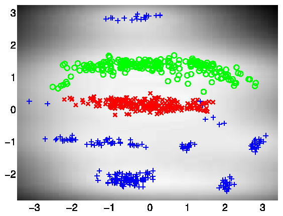
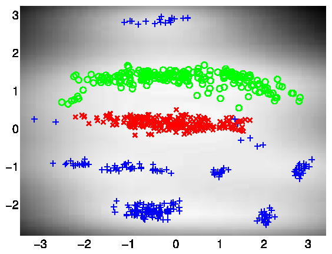Left: Bayesian GP-LVM on the oil data without missing outputs. The phases of flow are shown as green circles, red crosses and blue plusses. Right: Similar but in this case 50% of the outputs are missing and the model attempts to reconstruct them.
100 points in the active set
The scriptdemOil100Vargplvm1.m runs the Bayesian GP-LVM Model on the Oil Data with only 100 points in the active set, giving the result on the figure below.
Bayesian GP-LVM on the oil data using 100 points in the active set.
Loop Closure in Robotics
In on-going work with Dieter Fox and Brian Ferris at the University of Washington we are interested in loop closure for robotic navigation, included as an example is a data set of a robot completing a loop while reading wireless access point signal strengths. The scriptdemRobotWirelessVargplvm1.m runs the Bayesian GP-LVM Model on this dataset in order to produce a neat track and close the loop, as can be seen on the figure shown below.
Use of the Bayesian GP-LVM Model to obtain loop closure in a robot navigation example.
Frey Faces Data
In this dataset, we try to exploit the ability of the model to reconstruct partially observed test data. Therefore, when the model is trained only half of the image pixels are assumed to be observed. After training on 1000 images, each partially observed test image was processed separately and the missing pixels were predicted as shown on the figures below. 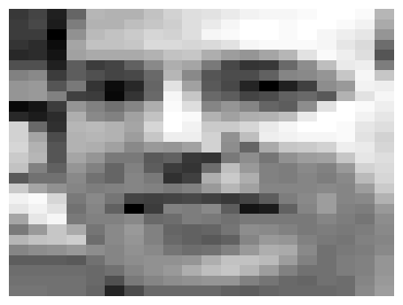
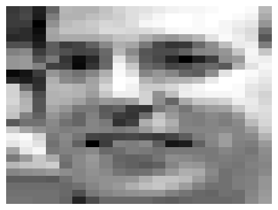

 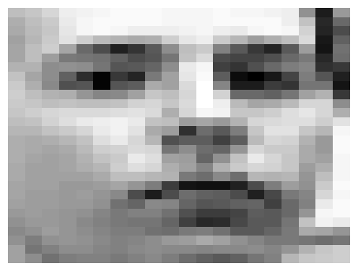
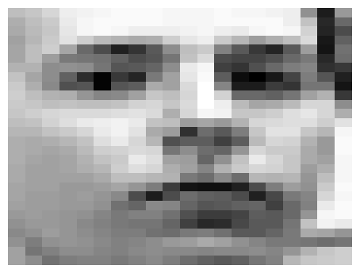 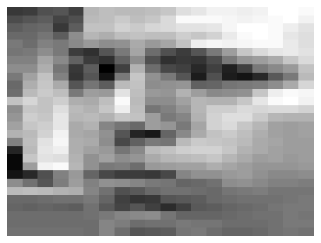
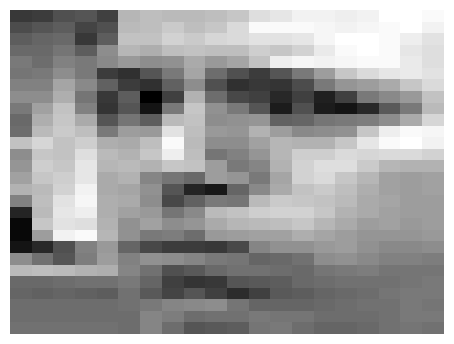

 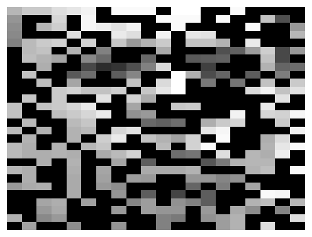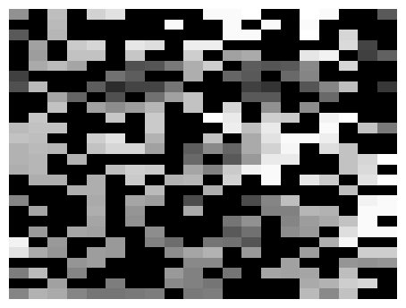
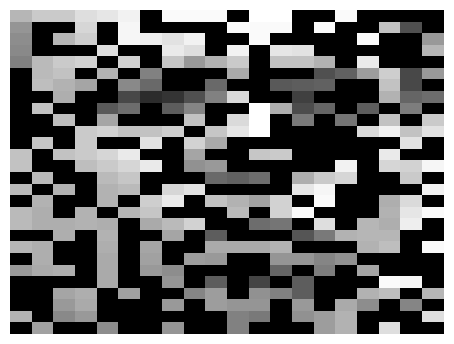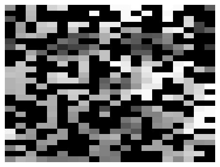 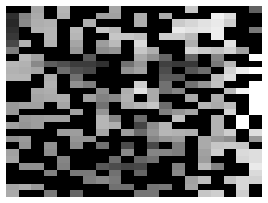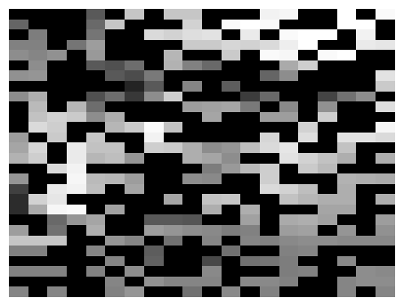
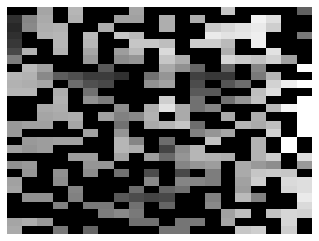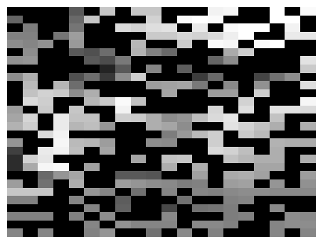


 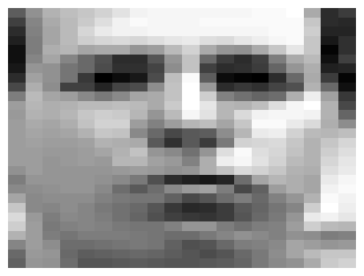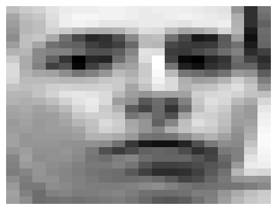
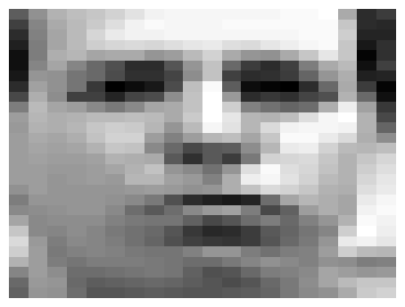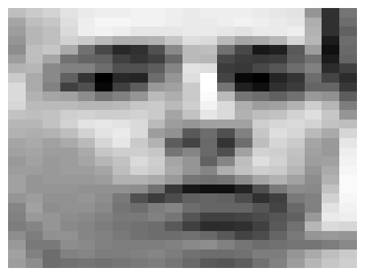 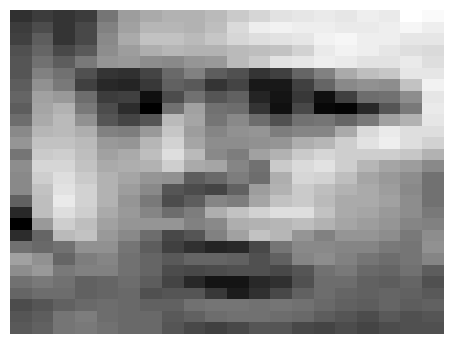
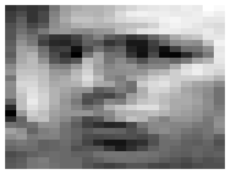Examples of reconstruction of partially observed test images in Frey faces by applying the Bayesian GP-LVM. Each column corresponds to a test image. In every column, the top panel shows the true test image, the middle panel the partially observed image (where missing pixels are shown in black) and the bottom image is the reconstructed image.